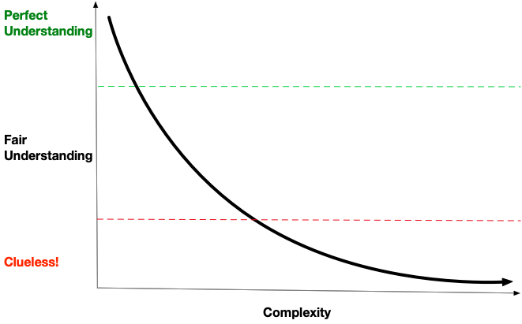

Mantis¶
Introduction¶
Mantis is a platform to build an ecosystem of realtime stream processing applications.
Similar to micro-services deployed in a cloud. Mantis applications (jobs) are deployed on the Mantis platform. The Mantis platform provides the APIs to manage the life cycle of jobs (like deploy, update and terminate), manages the underlying resources by containerizing a common pool of servers and similar to a traditional micro-service cloud allows jobs to discover and communicate with other jobs.
By providing stream processing As-a-Service, Mantis allows developers to simply focus on their business logic to build powerful and cost-effective streaming applications.
Why we built Mantis?¶
Mantis evolved from the need to get better (faster and in-depth) operational insights in a rapidly growing complex micro-service ecosystem at Netflix.

As complexity of a system increases, our comprehension of the system rapidly decreases. In order to counter this complexity we need newer approaches to operational insights.
We need to change the way we generate and collect operational data:
- We should have access to raw events. Applications should be free to publish every single event. If we reduce the granularity at this stage, such as pre-aggregating or sampling, then we're already at a disadvantage when it comes to getting insight since the data in its original form is already lost.
- We should be able to access this data in realtime. Operational use cases are inherently time sensitive by nature. This becomes increasingly important with scale as the impact becomes much larger in less time.
- We should be able to ask new questions of this data without necessarily having to add new instrumentation to your applications. It's not possible to know ahead of time every single possible failure mode our systems might encounter despite all the rigor built in to make these systems resilient. When these failures do inevitably occur, it's important that we can derive new insights with this data.
We need a new kind of execution environment:
- Can Process high volume data at low latency
- Has low Operational burden We need a managed platform where most of the operational tasks are handled automatically on behalf of the user. We don't need the additional overhead of operating our monitoring system.
- Is Elastic and Resilient We need a highly reliable system that can automatically recover from node failures and be able to scale the resources dynamically based on the data volume.
- Ecosystem of Streaming services A lot of use-cases often need the same data, Allowing jobs to discover each other and collaborate together by sharing data and results we can build cost-effective jobs that maximise code and data re-use.
We should be able to do all of the above in a cost-effective way. As our business critical systems scale, we need to make sure the systems in support of these business critical systems don't end up costing more than the business critical systems themselves.
Mantis was built to meet all the above needs. It was designed by Netflix.
How can Mantis be used ?¶
Mantis provides a robust, scalable platform that is ideally suited for high volume, low latency use cases like anomaly detection and alerting.
Mantis has been in production at Netflix since 2014. It processes trillions of events and peta-bytes of data every day.
As a streaming microservices ecosystem, the Mantis platform provides engineers with capabilities to minimize the costs of observing and operating complex distributed systems without compromising on operational insights. Engineers can build cost-efficient real-time applications on top of Mantis to quickly identify issues, trigger alerts, and apply remediations to minimize or completely avoid downtime to the Netflix service.
Next Steps¶
To learn more about Mantis, visit the Getting Started guide or check out the Concepts overview or browse through the list of use cases powered by Mantis. To get involved with community, visit the Community page where you can subscribe to one of our mailing lists. For a detailed Programming Guide on writing Mantis Jobs, refer to the Writing Mantis Jobs chapters.